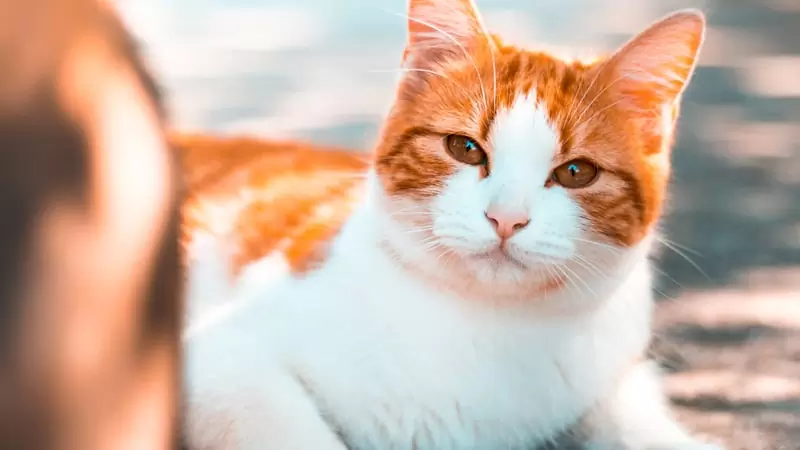
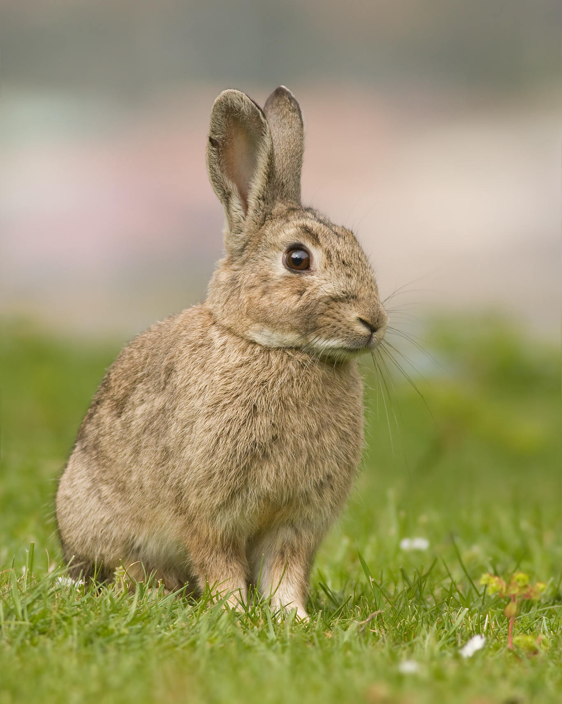

Kaiser
Es un Golden Retriever muy juguetón que ama correr por el parque y atrapar pelotas.
Es un Golden Retriever muy juguetón que ama correr por el parque y atrapar pelotas.

Una gata siamés muy tranquila a la que le encanta dormir cerca de la ventana bajo el sol.

Un hámster curioso y veloz que pasa sus noches ejercitándose en su rueda favorita.

Un loro muy sociable que ha aprendido a decir "Hola" y a imitar el sonido del timbre.

Un conejo de pelaje blanco como la nieve que disfruta saltando por el jardín.

A pesar de su nombre, Rayo es muy tranquila y disfruta de sus baños de agua tibia.